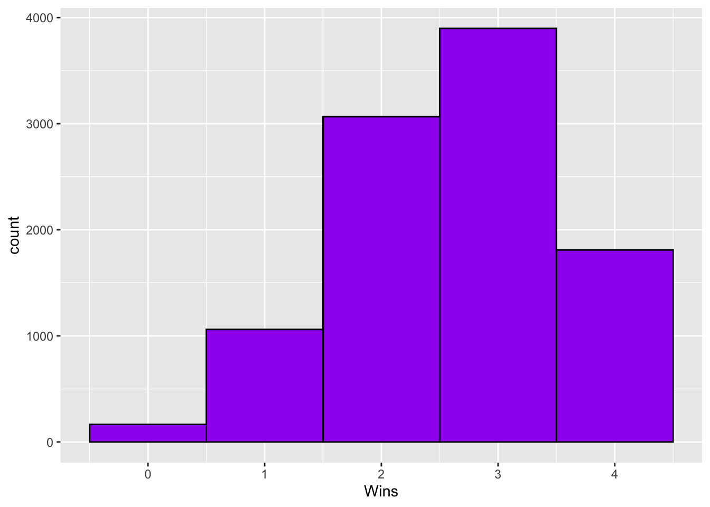
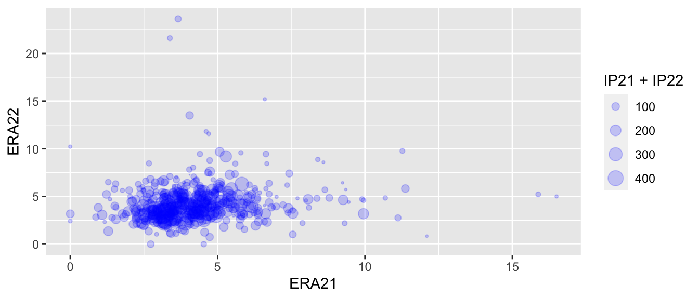
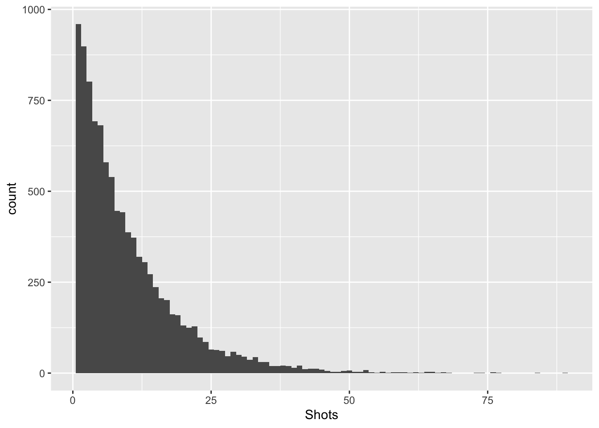

- About
- 1 Exploratory Data Analysis
- 2 Probability
- Chapter Preview
- 2.1 Definitions
- 2.2 Set Theory
- 2.3 Axioms, Properties, and Laws
- 2.4 Combinatorics
- 2.5 Odds and Gambling
- 2.6 Random Variables
- 2.7 Common Random Variables
- 2.8 Extra Stuff
- 2.8.1 Sets and Conditional Probability
- 2.8.2 Binomials and Multinomials
- 2.8.3 Expectation - Baseball
- 2.8.4 Basketball Scenario
- 2.8.5 Multiple Probability Distributions - Basketball
- 2.8.6 Law of Total Probability - Baseball
- 2.8.7 Multinomial Distribution - Baseball
- 2.8.8 Bayes - injured baseball player
- 3 Monte Carlo Simulation
- 4 Statistical Inference
- 5 Correlation
- 6 Linear Regression
- References
2.7 Common Random Variables
There are several families of random variables that show up frequently in applications. Some of these random variables include: - Binomial - Geometric - Poisson - Normal
2.7.1 Binomial RVs
Definition 2.24 A binomial(n,p) random variable is a discrete random variable that counts the numbers of “successes” over a fixed number of trials, \(n\), with each trial having an equal probability of success, \(p\).
\(P(X=k) = \binom{n}{k} p^k(1-p)^{n-k} = \frac{n!}{k!\ \cdot\ (n-k)!} p^k(1-p)^{n-k}\), where \(0 \leq k \leq n, 0 \leq p \leq 1\)
If \(X \sim Binomial(n,p)\), then \(E[X]=np\) and \(Var(X)=np(1-p)\)
Example 2.34 The Cubs and Rockies are playing a 4-game series. The Rockies have a 0.65 probability of winning each game, and the Cubs have a 0.35 probability. Assume each game is independent. Solve for the following quantities.
The Cubs wins exactly 1 game.
The Rockies win exactly 2 games.
The Cubs win at least 2 games.
The series ends in a sweep.
The expected number of wins for the Rockies.
The variance and standard deviations of wins for the Rockies.
Example 2.35 Complete 10,000 simulations of the four game series between the Rockies and Cubs. For the number of Rockies wins, calculate the sample mean and sample variance and compare these to the population values. Also, plot a histogram of the sample data.
set.seed(2020)
rockies_wins <- rbinom(n=10000,size=4,prob=0.65)
mean(rockies_wins)## [1] 2.6123var(rockies_wins)## [1] 0.9110798rockies_wins_df <- data.frame(Wins=rockies_wins)
rockies_wins_df %>% ggplot(aes(Wins)) + geom_histogram(binwidth = 1,color = "black", fill = "purple")
2.7.1.1 Binomial Coefficient Symmetry
Playoff series for a certain sports league are played as a best-of-seven series, with one team hosting four games and the opposing team hosing three. An executive for the league wishes to know the number of ways the home and away games can be assigned. (One such combination is A-A-B-B-A-B-A, the format used by the NBA and NHL for their best-of-seven series.) What is the total number of combinations?
However, instead of thinking about the number of ways to assign the games to the team that gets four home games, what if we thought about the number of ways to assign games to the team that gets three home games?
That would be \(\binom{7}{3}\). We can use the choose command in R to find this quantity.
choose(7,3)## [1] 35It turns out that this binomial coefficient is also equal to 35.
Theorem: \(\binom{n}{k} = \binom{n}{n-k}\)
\(\binom{n}{k} = \frac{n!}{k!\ \cdot\ (n-k)!}\)
\(\binom{n}{n-k} = \frac{n!}{(n-k)!\ \cdot\ (n-(n-k))!} = \frac{n!}{(n-k)!\ \cdot\ k!} = \binom{n}{k}\)
2.7.2 Geometric RVs
Definition 2.25 A Geometric(p) random variable is a discrete random variable that counts the numbers of trials until a “success” occurs, where the probability of success, \(p\), is constant across all trials.
\(P(X=k) = p(1-p)^{k-1}\), where \(k \geq 1, 0 \leq p \leq 1\)
If \(X \sim Geometric(p)\), then \(E[X]=\frac{1}{p}\) and \(Var(X)=\frac{p}{1-p}\)
Example 2.36 Suppose the number of shots needed by a hockey team in order to score their first goal, X, is modeled by a Geometric(\(\frac{1}{10}\)) random variable. Use this information to answer the following questions.
What is the probability that it takes exactly 3 shots to score the first goal?
What is the probability that it takes less than 3 shots to score the first goal?
What is the probability that it takes more than 3 shots to score the first goal?
Caution: Some references parameterize the Geometric distribution based on the number of failures before the first success, rather than the trial on which the first success occurs. This changes the PMF, mean, and variance, so be careful.
Let’s simulate the number of shot attempts required to score the first goal (Geometric(\(p=1/10\))) from the previous example.
set.seed(2020)
geometric <- rgeom(10000, 1/10)
head(geometric, 20)## [1] 2 2 7 55 6 11 2 11 2 5 0 50 17 2 7 0 7 19 17 1Some of the values were 0, which could not happen if R was considering the number of the trial on which the first success occurred. You can add 1 to the values given by R to arrive at the first success distribution.
first_success <- geometric + 1
head(first_success, 20)## [1] 3 3 8 56 7 12 3 12 3 6 1 51 18 3 8 1 8 20 18 2mean(first_success)## [1] 10.0669The mean of this sample of variables is 10.827, which is close to the expected mean of \(\frac{1}{p} = 10\).
Let’s plot the sample distribution of shots required to score a goal from the simulation as well.
first_success_df = data.frame(Shots = first_success)
first_success_df %>% ggplot(aes(x=Shots)) + geom_histogram(binwidth = 1)
2.7.3 Poisson RVs
Definition 2.26 A Poisson(\(\lambda\)) random variable is a discrete random variable that counts the numbers of “successes” for a given rate parameter, \(\lambda\), for a given interval.
\(P(X=k) = \frac{e^{-\lambda}\lambda^k}{k!}\), where \(k \geq 0,\)
If \(X \sim Poisson(\lambda)\), then \(E[X]=\lambda\) and \(Var(X)=\lambda\)
Example 2.37 During the 2021 Major League Soccer season, the Colorado Rapids scored 51 goals in 34 games on their way to a first-place finish in the Western Conference regular season standings.
The team scored \(\frac{51}{34} = 1.5\) goals per game. Let’s model the distribution of Rapids goals using a Poisson(1.5) random variable that we’ll call Y.
- Which is more likely: Y taking on the value 0 or Y taking on the value 2?
We can calculate these probabilities in R using the dpois command.
dpois(x=0, lambda=1.5)## [1] 0.2231302dpois(x=2, lambda=1.5)## [1] 0.2510214We can also plot the PMF of Y to check visually.
ggplot(transform(data.frame(x=c(0:8)), y=dpois(x, lambda = 1.5)), aes(x, y)) +
geom_bar(stat="identity") +
labs(x="Value", y="Frequency", title="Probability mass function of Poisson(1.5) random variable")
Let’s check whether using a Poisson distribution was appropriate by comparing it to the actual 2021 Colorado Rapids match results.
# Data: https://www.espn.com/soccer/team/results/_/id/184/season/2021
library("kableExtra")
goals <- c(0:4, "5 or more")
actual_frequency <- c(6, 14, 7, 6, 0, 1)
actual_proportion <- actual_frequency / sum(actual_frequency)
expected_proportion <- c(dpois(0:4, lambda=1.5), ppois(4, lambda=1.5, lower.tail=FALSE))
expected_frequency <- round(expected_proportion * 34, 1)
rapids.data <- data.frame(goals, actual_frequency, actual_proportion, expected_frequency, expected_proportion)
rapids.data %>%
kbl() %>%
kable_styling()| goals | actual_frequency | actual_proportion | expected_frequency | expected_proportion |
|---|---|---|---|---|
| 0 | 6 | 0.1764706 | 7.6 | 0.2231302 |
| 1 | 14 | 0.4117647 | 11.4 | 0.3346952 |
| 2 | 7 | 0.2058824 | 8.5 | 0.2510214 |
| 3 | 6 | 0.1764706 | 4.3 | 0.1255107 |
| 4 | 0 | 0.0000000 | 1.6 | 0.0470665 |
| 5 or more | 1 | 0.0294118 | 0.6 | 0.0185759 |
- What differences do you notice between the actual results and the expected values based on the Poisson random variable?
- Even if the true population distribution of 2021 Rapids goals was truly a Poisson(1.5) random variable, why might the actual distribution of their goals differ from the probability mass function?
- What are the advantages of using the Poisson distribution to model Major League soccer goals? What are the disadvantages?
Example 2.38 In 1997-1998 with the Los Angeles Lakers, Shaquille O’Neal attempted an average of 11.35 free throws per game with a standard deviation of 4.04. Is it appropriate to model Shaq’s per game free throw attempts as a Poisson(11.35) random variable?
- Plot the data.
shaq9798 <- read_csv("data/shaq9798.csv")
shaq9798 %>% ggplot(aes(x=FTA)) +
geom_bar(color = "yellow", fill = "purple") +
ggtitle("Per Game FT Attempt Totals by Shaq in 1997-1998") +
xlim(0,25) (b) Plot the PMF of a Poisson(11.35) random variable.
ggplot(transform(data.frame(x=c(0:25)), y=dpois(x, lambda = 11.35)), aes(x, y)) +
geom_bar(stat="identity") +
labs(x="Value", y="Frequency", title="Probability mass function of Poisson(11.35) random variable")
What similarities and what differences do you notice?
Calculate the variance of the two distributions and compare them.
shaqFTA <- shaq9798 %>% select(FTA)
var(shaqFTA)## FTA
## FTA 16.33305# Var(Poisson(11.35)) = 11.35- Calculate the probability that Shaq had 20 or more free throws and compare it to \(P(Poisson(11.35) \geq 20)\)
shaq20 <- sum(shaqFTA >= 20)/nrow(shaqFTA); shaq20## [1] 0.06666667poisson20 <- ppois(20, lambda=11.35, lower.tail=FALSE); poisson20## [1] 0.006536079- Is the Poisson distribution appropriate to model Shaq’s FTA per game? Explain.
2.7.4 Negative Binomial RVs
Definition 2.27 A Negative Binomial(\(r\),\(p\)) random variable is a discrete random variable that counts the numbers of “successes” for given parameters, \(r\) and \(p\).
\(P(X=k) = {k+r-1 \choose k}(1-p)^rp^k\), where \(k \geq 0,\)
If \(X \sim NB(r,p)\), then \(E[X]=\frac{rp}{1-p}\) and \(Var(X)=\frac{rp}{(1-p)^2}\)
The Negative Binomial distribution is often used to model count data that is “overdispersed”. A property of the Poisson distribution is that the mean and variance are equal. If you are analyzing count data such that the variance is much greater than the mean (i.e., overdispersed), then the Negative Binomial distribution may be an appropriate substitute.
Given sample count data, we can estimate appropriate parameters for a Negative Binomial in many ways. One such way is to use the “method of moments” estimator.
These estimators are given by:
\(\hat{p} = \frac{s^2-\bar{x}}{s^2}\) and \(\hat{r} = \frac{\bar{x}^2}{s^2-\bar{x}}\)
Example 2.39 Using Shaq’s 1997-1998 data, model his per game free throw attempts as a Negative Binomial random variable.
- Find an appropriate choice of parameters, \(r\) and \(p\).
shaq.mean <- mean(shaqFTA$FTA)
shaq.var <- var(shaqFTA$FTA)
rhat <- shaq.mean^2/(shaq.var-shaq.mean)
phat <- (shaq.var-shaq.mean)/shaq.var
c(rhat,phat)## [1] 25.85213 0.30509- Plot the Negative Binomial distribution. Note that R uses an alternative parameterization for \(p\). Use \(prob = 1-p\).
ggplot(transform(data.frame(x=c(0:25)), y=dnbinom(x,size=rhat,prob=1-phat)), aes(x, y)) +
geom_bar(stat="identity") +
labs(x="Value", y="Frequency", title="Probability mass function of NB(r=25.852,p=0.305) random variable")
- Calculate the mean and variance of the Negative Binomial and Shaq’s dataset.
shaq.mean <- mean(shaqFTA$FTA)
shaq.var <- var(shaqFTA$FTA)
NB.mean <- (rhat*phat)/(1-phat)
NB.var <- (rhat*phat)/(1-phat)^2
c(shaq.mean,shaq.var)## [1] 11.35000 16.33305c(NB.mean,NB.var)## [1] 11.35000 16.33305- Calculate the probability that Shaq had 20 or more free throws and compare it to \(P(NB(r=25.852,p=0.305) \geq 20)\)
shaq20 <- sum(shaqFTA >= 20)/nrow(shaqFTA); shaq20## [1] 0.06666667nb20 <- pnbinom(20,size=rhat,prob=1-phat,lower.tail=FALSE); nb20## [1] 0.0208711- Is the Negative Binomial distribution appropriate to model Shaq’s FTA per game? How does it compare to using the Poisson distribution? Explain.
2.7.5 Normal RVs
Definition 2.28 A Normal(\(\mu\),\(\sigma^2\)) random variable is a continuous random variable that is bell-shaped with mean \(\mu\) and variance \(\sigma^2\).
To calculate probabilities under the normal curve, you need either to integrate, use a table, or a computer.
Note that a normal random variable can be standardized by using: \(z = \frac{x-\mu}{\sigma}\)
Theorem 2.8 For a normal(\(\mu\),\(\sigma^2\)) random variable, we have the following approximations:
- About 68% of the data falls within one standard deviation of the mean (i.e., \(\mu \pm \sigma\))
- About 95% of the data falls within two standard deviations of the mean (i.e., \(\mu \pm 2\sigma\))
- About 99.7% of the data falls within three standard deviations of the mean (i.e., \(\mu \pm 3\sigma\))
Example 2.40 The skills (or tools) of a baseball player are often rated on a scale of 20-80, where 50 is an average grade, 20 is the lowest grade, and 80 is the highest grade. The distribution of tool grades is approximately normally distributed (\(\mu=50, \sigma =10\)).
See https://blogs.fangraphs.com/scouting-explained-the-20-80-scouting-scale/ for more details. Calculate the following probabilities.
Former Rockie Nolan Arenado has been graded to have game power of 70. Game power estimates a player’s ability to hit home runs. Approximately what percentage of baseball players have equal or greater game power than Arenado?
Mike Trout has been graded to have raw power of 55. Raw power estimates a player’s ability to hit baseballs hard (i.e., hard hit rate). Approximately what percentage of baseball players have equal or less raw power than Arenado?
Suppose a Rockies prospect is said to be in the top 10% of all baseball players in terms of their speed. What approximate speed grade would correspond to the player?
Suppose a Rockies prospect is said to be in the bottom 20% of all baseball players in terms of their hit ability. What approximate hit grade would correspond to the player?
Between what two grades do approximately 95% of all players lie for a given tool?
Let’s check our answers:
a <- 1-pnorm(q=70,mean=50,sd=10); a## [1] 0.02275013b <- pnorm(q=55,mean=50,sd=10); b## [1] 0.6914625c <- qnorm(0.1,mean=50,sd=10,lower.tail = F); c## [1] 62.81552d <- qnorm(0.2,mean=50,sd=10,lower.tail = T); d## [1] 41.58379e <- pnorm(q=70,mean=50,sd=10) - pnorm(q=30,mean=50,sd=10); e## [1] 0.9544997Example 2.41 Player X has a projected mean WAR of 3 with standard deviation of 2 and player Y has a projected mean WAR of 1.5 with a standard deviation of 3. Assume projected WAR is normally distributed. What is the probability that Player X outperforms Player Y?
Link to WAR explaination: https://www.mlb.com/glossary/advanced-stats/wins-above-replacement
We want Pr(X>Y) or Pr(X-Y>0).
Let Z = X-Y.
E[Z]=1.5
Var(Z)=5
Pr(Z>0)=1-Pr(Z \(\leq\) 0)
#Calculate probability Z<=0
pr <- pnorm(0,1.5,sqrt(5))
print(1-pr)## [1] 0.7488325The Probability that Player X outperforms Player Y is 0.7488.